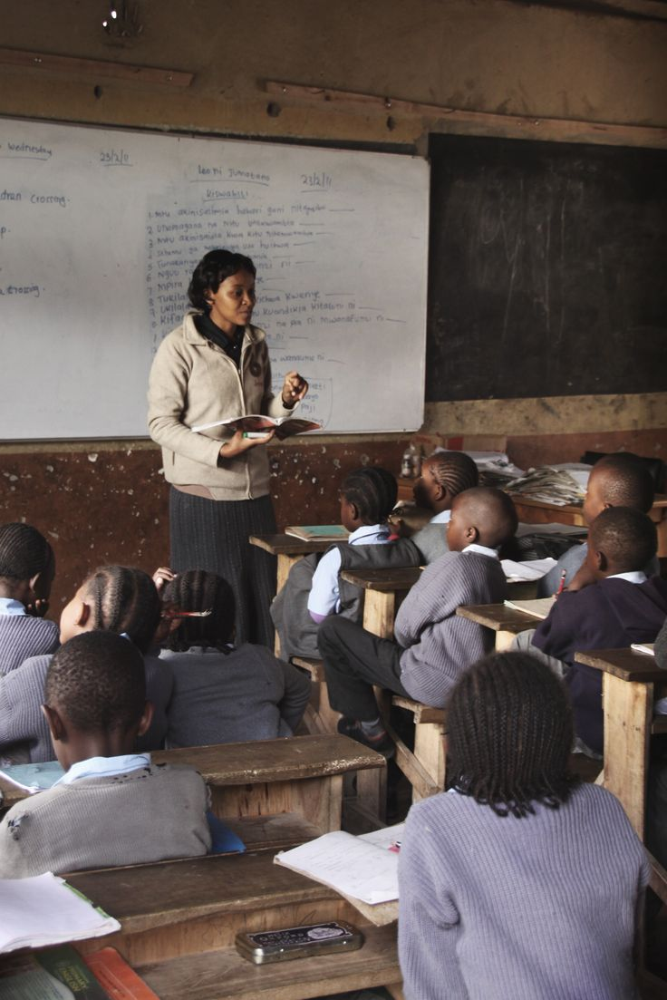

more about us
Creating opportunities through technology, education, and empowerment to create awareness in the lives of many to empower and promte change .

Digital Skills Training
We train youth in coding, graphic design, and online entrepreneurship.

Mentorship
We connect learners with mentors who guide them in their digital journey.

Community Outreach
We reach underserved areas to promote access to digital tools and education.

Educational Resources
We provide online materials to support continuous learning and growth.

empowering chidren
We live to see children happy and living in a society with a smile ob their faces and to ensure their growth in all aspects of life.

we live to see change
We live to see a hopefully society of chidren filled with the hope of living and changing the society